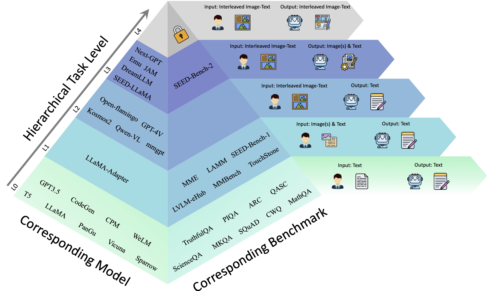

Bohao LiPh.D. candidateSchool of Data Science The Chinese University of Hong Kong, Shenzhen Shenzhen, China, 518000. Email: libohao1998@gmail.com; Github: https://github.com/Bohao-Lee; Google scholar: https://scholar.google.com |
|
Biography
I am a Ph.D. candidate in the School of Data Science, The Chinese University of Hong Kong, Shenzhen , co-advised by Prof. Ruimao Zhang and Prof. Shuang Li. I got a M.E. degree in University of Chinese Academy of Sciences, Beijing in June 2023, advised by Prof. Qixiang Ye. I got a B.E. degree in Wuhan University, Wuhan in June 2020.
My research interests include computer vision and deep learning, specifically for few-shot learning and multimodal.
Publications
 |
Bohao Li, Yuying Ge, Yi Chen, Yixiao Ge, Ruimao Zhang, Ying Shan
SEED-Bench-2-Plus: Benchmarking Multimodal Large Language Models with Text-Rich Visual Comprehension [Paper] [Dataset] [Code] 
|
|  | *Bohao Li, *Yuying Ge, Yixiao Ge, Guangzhi Wang, Rui Wang, Ruimao Zhang, Ying Shan
SEED-Bench-2: Benchmarking Multimodal Large Language Models IEEE Conference on Computer Vision and Pattern Recognition, 2024 TechBeat Community's 2024 Popular Technology Work [Link] [Paper] [Dataset] [Code] [Leaderborad]
|
| *Bohao Li, *Rui Wang, *Guangzhi Wang, Yuying Ge, Yixiao Ge, Ying Shan
Seed-bench: Benchmarking multimodal llms with generative comprehension [Paper] [Dataset] [Code] [Leaderborad]
|
|
| Bohao Li, Chang Liu, Mengnan Shi, Xiaozhong Chen, Xiangyang Ji, Qixiang Ye
Proposal Distribution Calibration for Few-Shot Object Detection IEEE Transactions on Neural Networks and Learning Systems, 2024 [Paper] [Code] 
|
|
 |
*Bohao Li, * Boyu Yang, Chang Liu, Feng Liu, Rongrong Ji, Qixiang Ye
Beyond Max-Margin: Class Margin Equilibrium for Few-shot Object Detection IEEE Conference on Computer Vision and Pattern Recognition, 2021 [Paper] [Code] 
|
| Chen Yi, Yuying Ge, Yixiao Ge, Mingyu Ding, Bohao Li, Rui Wang, Ruifeng Xu, Ying Shan, Xihui Liu
EgoPlan-Bench: Benchmarking Egocentric Embodied Planning with Multimodal Large Language Models [Project] [Paper] [Dataset] [Code] 
|
|
| Renrui Zhang, Xiangfei Hu, Bohao Li, Siyuan Huang, Hanqiu Deng, Yu Qiao, Peng Gao, Hongsheng Li
Prompt, generate, then cache: Cascade of foundation models makes strong few-shot learners IEEE Conference on Computer Vision and Pattern Recognition, 2023 [Paper] [Code] 
|
|
| Boyu Yang, Chang Liu, Bohao Li, Jianbin Jiao, Qixiang Ye
Prototype mixture models for few-shot semantic segmentation European Conference on Computer Vision (ECCV), 2020 [Paper] [Code] 
|
|
| Boyu Yang, Fang Wan, Chang Liu, Bohao Li, Xiangyang Ji, Qixiang Ye
Part-based semantic transform for few-shot semantic segmentation IEEE Transactions on Neural Networks and Learning Systems, 2021 [Paper] [Code] 
|